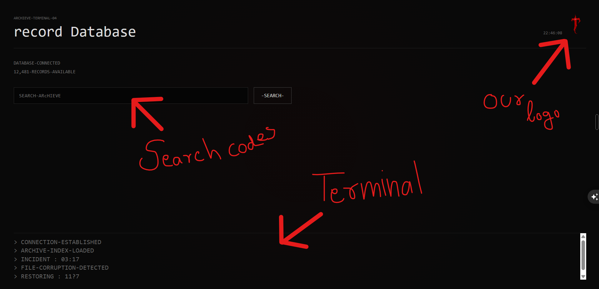

MUST READ THESE
About The Last Tab
hey, Iam Azar (aka NoveOp),
Hmm this is The Last tab, my first horror we game. Its made up with HTML, JS, CSS (mainly JS). If we are going to the game story, you are a
noob, oh never mind just kidding. You was trying to get access to a high secured archieve dataset where you heard about some rumours on reddit
that there is a unknown entity playing in that website. Maybe an AI ? or a Ghost ?
yeah your job is to find it. and also the game contains background ambience sound and other sfx so i prefer to keep your volume full and enhanced.
How can you play ?
Hmm this a story game so you need to just discover the story :x.
Not kidding, there you need to discover hidden codes, timestamps, and more. and at the end i hope you will get the conclusion. look for everywhere in your screen for codes,
timestamps, and even photos contains some clues, which will led you to the final archieve (winning point).
This may help you :-
